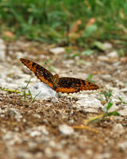

Next Photo
-
Vote
Lightning
It has long been my dream to take a photo of lightning, and just recently I had the perfect opportunity to do so. This is just one of the shots I got and its my favorite from the night. The conditions were perfect for photography; It wasn't raining yet, the lightning was just a constant flashing through the clouds and sometimes striking. I set up on a tripod and opened my shutter up for fifteen seconds. The exposure was a challenge because all the lightning strikes had different intensities. I stopped down my lens to about f8.0 and turned the ISO to 400. This allowed me to get very little ambient light and just leave the shutter open until lightning struck. After that I kept re-framing the shot and clicking the shutter.
I got a lot of experience from this shoot and next time I will be more prepared to set up for a great shot. This one could be much improved, I don't know why I left the ISO so high and it's always a goal to get a larger lightning strike.
That night's storm was beautiful, the shot doesn't even capture the sight of constantly rolling lightning throughout the clouds. The colors on the horizon were beautiful as well.
More...
ID: 70
Title: Lightning
Description: It has long been my dream to take a photo of lightning, and just recently I had the perfect opportunity to do so. This is just one of the shots I got and its my favorite from the night. The conditions were perfect for photography; It wasn't raining yet, the lightning was just a constant flashing through the clouds and sometimes striking. I set up on a tripod and opened my shutter up for fifteen seconds. The exposure was a challenge because all the lightning strikes had different intensities. I stopped down my lens to about f8.0 and turned the ISO to 400. This allowed me to get very little ambient light and just leave the shutter open until lightning struck. After that I kept re-framing the shot and clicking the shutter.
I got a lot of experience from this shoot and next time I will be more prepared to set up for a great shot. This one could be much improved, I don't know why I left the ISO so high and it's always a goal to get a larger lightning strike.
That night's storm was beautiful, the shot doesn't even capture the sight of constantly rolling lightning throughout the clouds. The colors on the horizon were beautiful as well.
Keywords: lightning strike bolt cloulds sky storm long exposure amazing
Hidden: n
Date added: Tue Jul 15 23:02:48 CDT 2008
Date taken: Fri Jun 27 22:00:11 CDT 2008
Camera: Canon EOS DIGITAL REBEL XT.
Resolution: 1200x960
Mode: 1
Shutter speed: -4906891/1000000
Flash: 16
Exposure time: 30/1
Iso: 200
Metering: 5
Aperture: 6/1
Focal length: 20/1
Artist: NathanielGuy Mahieu
Copyright: 2007 NathanielGuy Mahieu
Views: 468
